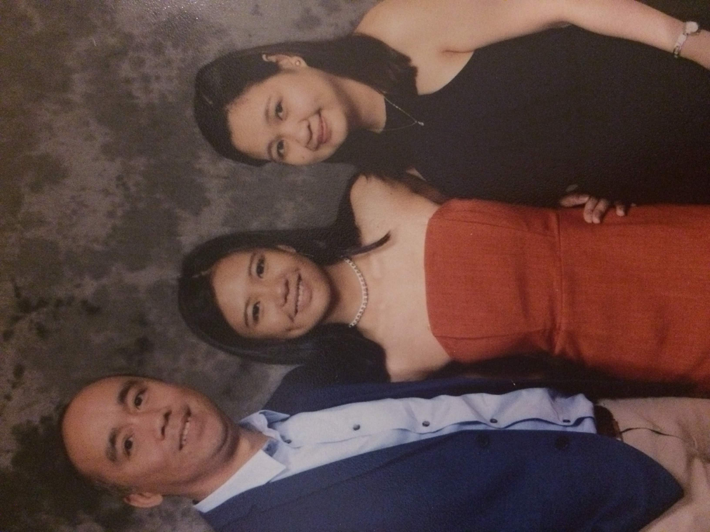

Get to know me more..
My Life's Greatest Achievement So Far
Late 2017, I finished my 13 years of schooling. I graduated Year 12; the final year of High School, in which I see as a milestone in my life. I've cherished those 13 years of my life where I learnt many life lessons and learnt things about myself. The last year of my high school is pretty extra-ordinary for me, I have gained valuable experiences, and made many fun and loving memories with my close friends and family.
The following images are most of the peolpe who are important to me:

List of my Favourite Things
Top 5 fav Movies and TV Shows
- Game of Thrones
- Shawshank Redemption
- Stranger Things
- The Notebook
- To all the Boy's I've Loved Before
Top 5 current favourite artists
- Kanye West
- SZA
- Daniel Caesar
- Sabrina Claudio
- Amine
Current favourite video game
- Terraria